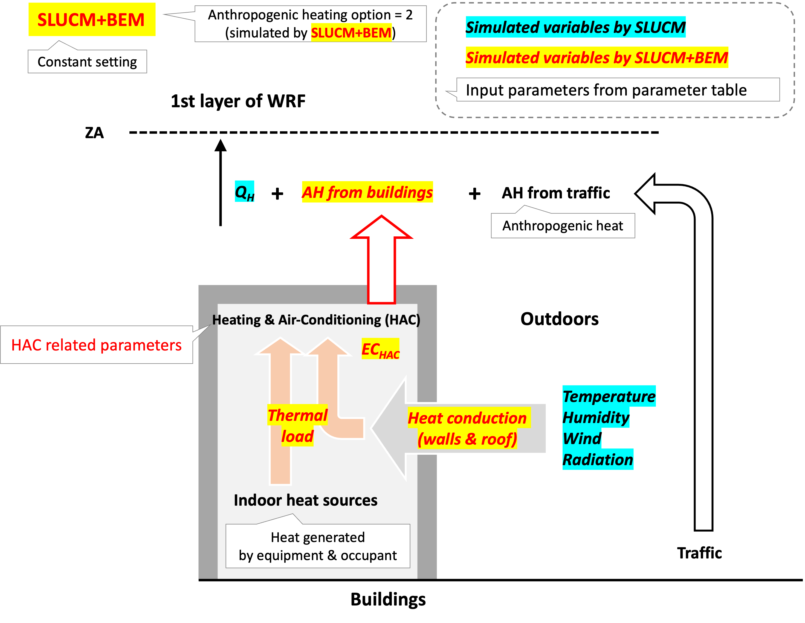
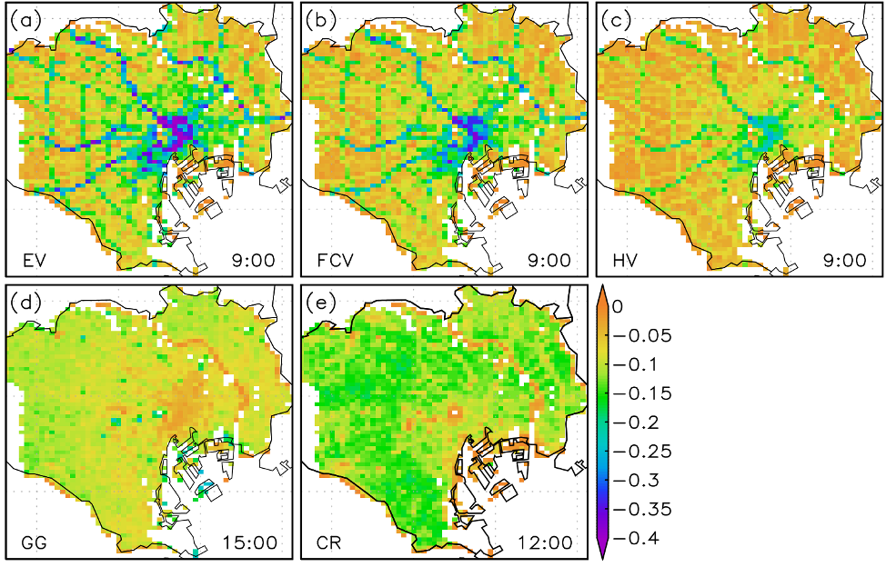

NEWS
-
2025.05.16個人サイトをGitHubに移行しました。
-
2025.05.16日本気象学会2025年度春季大会 ＠慶應義塾大学 日吉キャンパスにて、 正野賞の受賞記念講演をおこないました。
-
2025.04.01（国研）国立環境研究所 気候変動適応センターに主任研究員として着任しました。
-
2025.03.31（国研）産業技術総合研究所を退職しました。12年間お世話になりました。
-
2025.03.24【受賞決定】日本気象学会 2025年度 正野賞
-
2025.03.14【採択】環境研究総合推進費 戦略的研究開発（I）S-24-3(3) 「都市域熱環境の広域評価と緩和策を含む暑熱リスク低減策の提案と評価」
-
2025.03.09個人サイトをgoogle siteに移行しました。
研究テーマ
-
都市気候・エネルギーのモデリング（ローカルからグローバルへ）
東京のような個別の都市だけでなく、世界中全ての都市に適用可能な（普遍的な）モデリング研究をおこなっています。
 -
都市の気候と人間活動・エネルギー需給・人間健康・生態系の関係の実態等の解明
都市に住む人の行動と気候（ヒートアイランド）、エネルギー等の相互作用の解明と定量化をおこなっています。
-
都市の気候変動緩和・適応策の評価・提案
都市気候・エネルギーモデリングを生かして、都市毎に気候変動緩和・適応策の評価をおこない、最適な対策の提案を目指しています。
 -
極端高温（猛暑・熱波）と局地風（フェーン）のメカニズム解明
主に国内を対象に、40℃を超えるような極端な高温とそれをもたらすフェーン現象のメカニズムの解明をおこなっています。

研究プロジェクト（実施中）
-
環境研究総合推進費 S-24-3(3)「都市域熱環境の広域評価と緩和策を含む暑熱リスク低減策の提案と評価」（サブテーマリーダー）
プロジェクトの概要、準備中

-
科研費基盤B「GuCM: Integrated framework on multi-scale urban-centered global climate modeling」（分担）
プロジェクトの概要、準備中

-
環境研究総合推進費「極端高温等が暑熱健康に及ぼす影響と適応策に関する研究」（分担）
プロジェクトの概要は コチラ
-
科研費基盤A「林野火災危険度の物理的定量評価手法の確立と気候変動影響評価」（分担）
プロジェクトの概要は コチラ
-
科研費基盤B 「都市気候システムにおける古典的な排熱フィードバックゲインの定量化」（分担）
プロジェクトの概要は コチラ
-
科研費基盤A「見過ごされてきた都会の微生物進化：都市化が微生物を介して自然環境に与える影響」（分担）
プロジェクトの概要は コチラ
プロフィール

国立環境研究所 気候変動適応センター
主任研究員
（気象予報士）
髙根 雄也
Yuya Takane
-
学歴
-
2008.03
岡山理科大学 総合情報学部 生物地球システム学科 卒業 学士（総合情報学）
-
2010.03
筑波大学 大学院生命環境科学研究科 地球科学専攻 博士前期課程 修了 修士（理学）
-
2013.03
筑波大学 大学院生命環境科学研究科 地球環境科学専攻 博士後期課程 修了 博士（理学）
-
-
経歴
-
2013.04-2015.03
（独）産業技術総合研究所 環境管理技術研究部門 研究員
-
2015.04-2017.09
（国研）産業技術総合研究所 環境管理研究部門 研究員（改組）
-
2017.02-2019.01
Department of Meteorology, University of Reading, Visiting Researcher（日本学術振興会 海外特別研究員）
-
2017.10-2020.03
（国研）産業技術総合研究所 環境管理研究部門 主任研究員
-
2020.04-2025.03
（国研）産業技術総合研究所 環境創生研究部門 主任研究員（改組）
-
2020.10-2021.09
（国研）産業技術総合研究所 エネルギー・環境領域 研究企画室 企画主幹（所内併任）
-
2023.10-
東京理科大学 創域理工学研究科 客員准教授
-
2025.04-
（国研）国立環境研究所 気候変動適応センター 主任研究員
-
-
受賞歴
-
2025.5
日本気象学会 2025年度 正野賞
・髙根雄也, 2025: 都市域の極端高温のメカニズム解明と都市排熱特性を考慮した温暖化の対策評価に関する研究. Link
-
2021.9
日本ヒートアイランド学会 第16回全国大会奨励賞
・中島虹, 髙根雄也, 福場伸哉, 山口和貴, 亀卦川幸浩, 2021: 東京都心における電力需要感応度の時空間特性.
-
2014.6
The 6th International Symposium on Computational Wind Engineering (CWE2014) Poster Award
・Takane, Y., H. Kusaka, and H. Kondo, 2014: Mechanisms of foehn wind and a recent record-breaking high temperature in the Tokyo metropolitan area using the WRF model.
-
2013.7
日本ヒートアイランド学会 第8回全国大会ベストポスター賞
・髙根雄也, 日下博幸, 近藤裕昭, 2013: 首都圏で発生した極端高温とフェーンのメカニズム -2011年6月24日の事例解析. Link
-
2008.7
日本ヒートアイランド学会 第3回全国大会最優秀論文発表賞
・髙根雄也, 日下博幸, 原政之, 足立幸穂, 木村富士男, 2008: 熊谷猛暑の形成メカニズム -2007年8月16日の事例解析. Link
-
-
所属学会
研究業績
研究トピックス
-
2025.05 日本気象学会 正野賞を受賞しました
受賞業績：「都市域の極端高温のメカニズム解明と都市排熱特性を考慮した温暖化の対策評価に関する研究」
選定理由： コチラをご覧ください。
日本気象学会正野賞は「気象学及び気象技術に関し優秀な研究をなした若手研究者に対する顕彰」であり、主に筑波大学大学院および前所属先（産業技術総合研究所）で実施した都市部の極端高温のメカニズム解明と都市気候エネルギーモデリングの研究業績に対して表彰いただいたものです。今回の受賞に対して、大変身が引き締まる思いであるとともに、筑波大学や産総研、その他国内外機関所属の多くの共同研究者の皆様に深く感謝いたします。都市部の温暖化は郊外よりも急激に進んでおりその影響は様々な分野で既に顕在化しています。そのため、都市部の温暖化対策は気候変動の緩和と適応の両面で急務です。今後は、幅広い分野の研究者が集う国立環境研究所の強みを生かしながら、気候変動問題の解決に少しでも寄与すべく研究を実施していきたいと考えています。
-
2024.12 使用しやすいシンプルな都市キャノピー・建物エネルギーモデルを開発・公開しました
（執筆中...φ(・ω・ )）
-
2023.12 東京スカイツリーで気象観測をスタートさせました
都市部で発生する多様な気象（都市特有の現象：ヒートアイランドを含む）の実態把握・メカニズム解明のために、自立式電波塔として世界一高いタワーだと認定されたスカイツリーで都市大気上空の気象の定常的な気象観測をスタートさせました。都市の「地上」では、気象庁のアメダス等の様々な定常的な気象観測がおこなわれていますが、スカイツリーほどの高さ（「上空」）における高度一定での定常的な観測はほとんどありません。南岸低気圧通過時の首都圏の降雪事例や猛暑・熱帯夜時等における都市の境界層下部の実態・メカニズム解明を目指しています。スカイツリーでの気象観測の概要については、下記のページをご覧ください。
※ 共同研究機関：（国研）産業技術総合研究所、（国研）防災科学技術研究所、気象庁気象研究所、気象庁気象大学校、協力：明星電気株式会社
-
2022.07 気温が1℃上がると電力需要はどのくらい増える？（気温感応度）
2022年6月下旬の猛暑（高温）により、経産省より初めてとなる「電力需給逼迫注意報」が出ました。暑いとエアコンを使わざるを得ずその結果電力需要は増えますが、では気温が1℃上がるとどのくらい電力需要が増えるのでしょうか？私たちは、この疑問に応えるべく、実際の過去の詳細な電力需要のデータを分析しました。なお、気温1℃の変化（ΔT）当たりの電力需要の変化（ΔEC）を「気温感応度」（ΔEC/ΔT）と言います。
分析の結果（ Nakajima, Takane et al. 2022）によると、気温感応度は場所によって大きく異なることがわかりました（左図）。例えば、都心部の気温感応度は高くなっており（おおむね0.6 W m-2 ℃-1以上）、周辺の郊外の値は小さくなっています。基本的に、都心部はオフィスビルや商業ビルが多く、一方で郊外は住宅が多いです。そこでこれら建物用途別の気温感応度の時間的な変化（右図）を見てみると、平日の日中（右図の左側）ではオフィス（B）と商業ビル（C）の気温感応度が大きく（おおむね0.6 W m-2 ℃-1以上）、住宅（RdとRm）では小さく（最大でも0.5 W m-2 ℃-1）なっていることがわかります。参考までに、休日の様子（右図の右側）を見てみると、面白いことにオフィス（B）と商業ビル（C）の気温感応度が平日に比べて小さくなっており（特にオフィス [B]）、逆に住宅（RdとRm）の気温感応度が平日に比べて多少大きくなっています。これらの平日と休日の差はまさに私たちの人間活動の平日と休日の差が反映された結果です。
以上が「気温が1℃上がるとどのくらい電力需要が増えるのか？」という疑問に対するおおまかな回答です（一言で答えたかったのですがなかなか難しい...）。「電力需給逼迫」時には、気温感応度の高いオフィスや商業ビルでの節電も重要ですし、感応度は低い住宅でも（住宅の方がオフィスや商業ビルよりも総数が多いので）節電をすることが重要と言えそうです。この夏の猛暑と電力需給逼迫をなんとか乗り切りたいですね。
ちなみに、冬は気温が低下すると電力需要が増加します。冬の気温感応度も夏とおおむね似た傾向がありますが、細かな違いも見られます。詳しくは 論文をご覧ください。
なお、ここで示した気温感応度は、現時点で世界でも最も詳細で正確なデータだと言えると思います。今後、この感応度が脱炭素技術や省エネ技術の導入によりどのように長期的に変化していくか把握し続けることが重要だと思っています（例えば断熱化や省エネエアコンを導入すれば感応度が下がる）。
図 夏の気温感応度（ΔEC/ΔT）の分布（左）と建物用途別の日内変化（右）。 Nakajima, Takane et al. (2022)の図を改変。
-
2022.06 関東と濃尾平野はなぜ暑い？
2022年6月下旬になり、関東（熊谷周辺など）や濃尾平野（多治見周辺など）では6月としては初めて40℃を超える高温が観測されています。地上付近の気温や風の状況（観測事実）を確認すると、これまでの過去の研究により明らかになった典型的な猛暑（極端高温）時の状況に似ているように見えます。そこでここでは、過去（2019年8月7日）に高根と田代大輔さん（オフィス気象キャスター株式会社）が、「 第1回 気象サイエンスカフェ in さいたま」での講演で使用したスライドを紹介します。
講演のタイトルは、「『熊谷vs多治見』暑いのはどっち？」です。熊谷と多治見を中心に関東と濃尾平野の高温の特徴とメカニズムをわかりやすく（たぶん）説明しています（少なくとも一般向けのつもりです）。関東と濃尾平野の極端高温は類似性が高いですが、違いもあり、比較してみると面白いです。
日本気象学会「 休校（休講）中の生徒・学生のみなさんの気象学の学びのためのコンテンツ」より
-
2022.06 新型コロナ禍でヒートアイランド緩和と省エネ？
新型コロナウイルス感染症拡大（パンデミック）に伴う経済活動の停滞やリモートワークの普及（人間の行動変容）により、CO2排出量の減少などが報告されていますが、ロックダウンや外出自粛により、都市の気温（ヒートアイランド）や電力消費量はどうなったのか？と気になる方もおられるかと思います（高根も気になりました）。しかしこれらへの影響を観測・測定データから抽出することは難しく、実態が十分にわかっていませんでした。
そこで今回、人間の行動変容によって、気温・人工排熱・電力消費量（電力由来CO2排出量）がどのように変わったのか、を都市気候モデルに社会ビッグデータであるリアルタイム人口動態データなどを取り入れて活用する新手法によって、都市街区毎に高解像度かつ日本全国にわたっても推定しました（世界初）。これは、地球温暖化も加わってますます暑くなる都市を「冷やす」ためのヒートアイランド対策やゼロエミッションを目指した民生部門の省エネ・脱炭素化へ向けての研究・技術開発を支援する有効な手段になり得ます。また今回提案する手法を用いれば、都市をさらに冷やすため、そして脱炭素化を進めるためのさまざまな対策技術の定量的な評価と最適な技術の組み合わせ、そして新たな対策のアイデアなどを提言することができます。以上の結果を論文として発表し、プレスリリースしました。その抜粋を転載します。続きや詳細は、下記リンク先の プレスリリースや 論文をご覧ください。
---- （ここから転載）
「国立研究開発法人 産業技術総合研究所（以下「産総研」という）環境創生研究部門 環境動態評価研究グループ 高根 雄也 主任研究員（兼務：ゼロエミッション国際共同研究センター 環境・社会評価研究チーム）、中島 虹 産総研特別研究員、明星大学 亀卦川 幸浩 教授は、都市気候モデルに社会ビッグデータであるリアルタイム人口動態データなどを取り入れて活用する新手法に基づき、新型コロナウイルス感染拡大に伴う2020年4～5月の緊急事態宣言期間における大規模な外出自粛が、都市の気温・人工排熱量・電力消費量（電力由来CO2排出量）へ及ぼす影響を日本全国の都市を対象に推定した。推定結果は、東京都心で日中の気温が通常時に比べて最大0.2℃低下し、電力消費量（CO2排出量）は7割減少したことを示している（概念図）。本研究により、外出自粛のような大規模な行動変容は、局所的なヒートアイランドや電力消費量・CO2排出量に影響を与えることが定量的に明らかになった。なお、成果の詳細は、2022年6月2日にNature Portfolioの論文誌 NPJ Climate and Atmospheric Scienceに掲載された。」
概念図 外出自粛による気温（左）および電力消費量（右）の変化（都市気候モデルによる推定値）。Takane et al. (2022)の図を改変。
---- （ここまで転載）
プレスリリース： 行動変容が都心の気温や電力消費量に与える影響が明らかに ―都市気候モデルと社会ビッグデータの融合による新推定―
-
2021.08 高根の研究が産総研YouTubeチャンネル：かがくチップスで紹介されました。
産総研広報部制作の研究紹介ビデオです。ぜひご覧ください！
-
2021.02 なぜ浜松で41.1℃？
2020年8月17日に静岡県浜松市で日最高気温国内歴代最高タイ記録41.1℃が観測されました。このニュースを見て、「なぜ浜松で？？」と疑問に思われた方も多かったのではと思います。そこで、上記疑問に答えるべき調査をおこないました。その結果を論文として発表し、プレスリリースしました。その抜粋を転載します。続きや詳細は、下記リンク先の プレスリリースや 論文をご覧ください。
---- （ここから転載）
「国立研究開発法人 産業技術総合研究所【理事長 石村 和彦】（以下「産総研」という）環境創生研究部門【研究部門長 尾形 敦】環境動態評価研究グループ 高根 雄也 研究グループ付は、気象大学校【校長 矢野 敏彦】伊藤 享洋 講師とともに、2020年8月17日に静岡県浜松市で観測された日本歴代最高タイ記録となる日最高気温41.1℃（以下「浜松41.1℃」という）の主な要因を解明した。
今回、特定の気圧配置型の出現と、これに伴う上空の高温・北西寄りの風、連日の晴天が浜松41.1℃の必要条件であることが分かった。これらの条件により濃尾平野ではフェーン現象が発生し、その後フェーン現象で昇温した風が名古屋都市圏や連日の晴天で乾燥した地面付近を吹き抜ける際に、地面から熱供給を受けさらに高温化した（図1）。この高温の風への地面からの熱供給の効果が最も積算される浜松市周辺の気温が最も高くなる。同時に、相対的に冷たい海からの南寄りの風の侵入が阻まれたこと（図1ピンク線で示す収束線）が、浜松41.1℃の直接的な要因であった。この高温の状況やメカニズムは、過去に浜松市が高温となった状況や、埼玉県熊谷市と岐阜県多治見市で40℃を超える高温が生じたメカニズムと類似していることも分かった。この結果は、上記の条件がそろえば浜松市で40℃超えの猛暑が今後も発生し得ることを示すとともに、同様の条件がそろい得る地域では同様の高温が発生する可能性があることを示している。
今回得られた知見は、今後ますます頻発すると予測されている猛暑の体系的な理解や電力需要の予測にも有用である。また、気候変動による都市部への悪影響に備えた適応策の評価や提案への貢献が期待される。」

図1 浜松41.1℃のメカニズムの概念図
特定の気圧配置型の下で上空の高温の空気塊が北西寄りの風によって山を吹き降り、濃尾平野でフェーン現象が起きる。フェーン現象で昇温した空気塊が都市部（オレンジ色の領域）や連日の晴天で乾燥した地面を吹き抜ける際に熱供給を受けさらに高温化し、浜松へ進入する（図中の左上から右下にかけての黄色から赤色へ変化する矢印）。この高温化した空気塊は、比較的冷涼な南寄りの風（右下の水色の矢印）の浜松への侵入を防ぎ（ピンク線：収束線）、地面からの熱供給の効果が最も積算される浜松周辺の気温が最も高くなる。矢印の色は風の温度（暖色ほど高い）を示す。高根・伊藤（2021）の図を改変。
---- （ここまで転載）
プレスリリース： なぜ浜松で41.1℃？ ―猛暑や電力需要の予測を目指した要因解明―
-
2019.10 都市の温暖化とエアコン使用の不都合な関係：「熱汚染」を見積もってみました
近年、日本の多くの都市では夏がとても暑く、エアコン無しには快適な生活が難しくなってきました。エアコンは屋内を快適空間にするパワフルな技術である一方で、多くのエアコンは夏では屋内に溜まった熱とその熱を汲み出すための電力等のエネルギー（が熱に変わった分）を室外機を経由して屋内から屋外へとして排出してしまいます（人工排熱）。この人工排熱は、屋外空間をさらに暑く不快にしてしまいます。つまり、私たちが日々生活をおくる都市空間では、「都市の温暖化→エアコンの使用→人工排熱の増加→都市の更なる温暖化」という悪循環（正のフィードバック機構）が存在します。
しかし、この悪循環に伴う都市の追加的な気温上昇量（私たちがエアコンを使用することにより、どのくらい都市をさらに暑くしているか？→これを便宜上「熱汚染」と呼びます）は、これまで分かっていませんでした。この熱汚染量を把握することは、私たちが住む都市の気候の将来を予測する上で科学的に重要であるだけでなく、私たちが日々行なっている「エアコンの使用」という当たり前の行動が、どのくらい環境へ悪影響を及ぼしているかを実感する意味でも重要です。
そこで私たちは、悪循環を物理的に計算できる数値モデル（地域気候モデル+都市気候モデル）を用いて、熱汚染量を定量的に見積もることにトライしました。その結果、地球温暖化に伴う都市の温暖化がこのまま進むと、それに伴い熱汚染量は地球温暖化量に比例して直線的に増加し、例えば地球温暖化が現在よりも+3.0℃進む将来（概ね2070年代）では、都市の住宅街区で最大0.6℃に達する可能性があることが示唆されました。この「0.6℃」という大きさは、都市のヒートアイランド対策（建物の緑化等）により期待される気温低下の効果に匹敵します。つまり、私たちが今まで通り暑さを回避するためにエアコンを使用すると、いずれヒートアイランド対策の効果を相殺してしまうくらいの環境影響をもたらすことを意味します。すると、都市空間を快適にするためには更なるヒートアイランド対策が必要になり、私たちの税金がさらに投入されることになるかもしれません...。（ちなみに、悪循環に伴いエネルギー需要も都市の住宅街区では約1.8倍、オフィス街区では約1.4倍に増える可能性が予測されていることから、悪循環の問題は都市の「熱」の問題だけではなく、「エネルギー」の問題でもあります。）
現在の気候において、夏にエアコンを使用しないという選択肢は、熱中症や睡眠障害、生産性低下等の予防の観点から現実的ではありません。しかし、私たちが日々行なっている「エアコンの使用」という当たり前の行動が、屋外の環境を悪化させているという認識を持ち、環境影響を抑える工夫について思いを馳せることは重要かもしれません。
研究内容についてより詳しく知りたい方は、下記のリンクより 原著論文および解説記事をご参照ください。
Contact
Access
16-2 Onogawa, Tsukuba, Ibaraki, Japan 305-8506
Center for Climate Change Adaptation (CCCA), National Institute for Environmental Studies (NIES)
アクセス
〒305-8506
茨城県つくば市小野川16-2 (国研)国立環境研究所 気候変動適応センター
連絡先
e-mail: takane.yuya@nies.go.jp